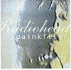

Painkiller
Moonraker 140
Tracks 1-9 from The Palace Theater, Hollywood 15/Jun/95
<1> The Bends
<2> Just
<3> Anyone Can Play Guitar
<4> High & Dry
<5> Planet Telex
<6> Fake Plastic Trees
<7> My Iron Lung
<8> Creep
<9> Stop Whispering
Tracks 10-15 acoustic, from Cat's Paw Studio, Atlanta 4/Aug/95
<10> Street Spirit (Fade Out)
<11> Lucky
<12> Bulletproof... I wish I was (early version)
<13> You
<14> Subterranean Homesick Alien
<15> Fake Plastic Trees
Tracks 16-17 from Universal Ampitheatre, Los Angeles 18/Dec/95
<16> Nobody Does it Better
<17> Creep
Type of recording : Radio Broadcast
Quality : Excellent
Notes : Swearing bleeped out of Creep. Version of Nobody Does it Better is
on this CD is far superior to the MTV one.